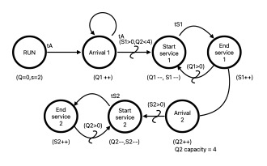

Optimizing Manufacturing Efficiency Through Discrete Event Simulation: Addressing Queue Management and Machine Bottlenecks
Introduction
This project developed a Discrete Event Simulation (DES) to model and optimize the lamp manufacturing process, focusing on the performance of two sequential machines. Implemented in Julia, the simulation tracked the flow of orders (lamps) using random number generators (RNGs) for realistic stochastic processing and event-driven mechanisms to handle arrivals, queues, and machine operations. Adjustable parameters, including interarrival times, machine service times, and queue capacities, were analyzed to evaluate and improve system efficiency.
Key Questions Addressed
Queue Capacity: Doubling the capacity of Queue 2 reduced Queue 1 congestion but did not significantly improve overall system performance, indicating that the original queue capacity was sufficient. Machine Speeds: While doubling the speed of Machine 1 had no impact, increasing Machine 2’s speed substantially reduced processing times and cleared bottlenecks, identifying Machine 2 as a critical constraint in the system. Increased Arrival Rates: A higher arrival rate initially overwhelmed the system, leading to excessive queue buildup. However, increasing Machine 2’s speed resolved the bottleneck, enabling the system to efficiently handle the higher demand.


The results highlighted that improving Machine 2's speed significantly benefits system performance, particularly under conditions of increased demand, while Queue 2’s capacity had minimal effect. These findings provide actionable insights for enhancing throughput and reducing manufacturing time in the production process.